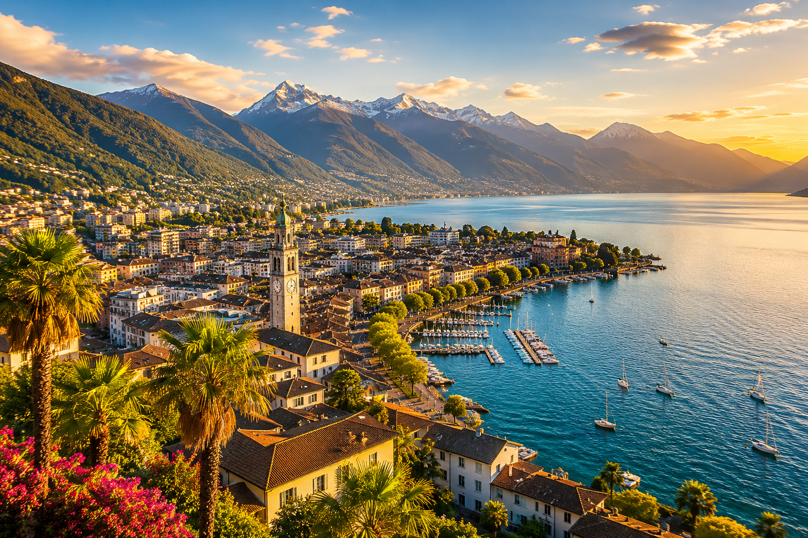
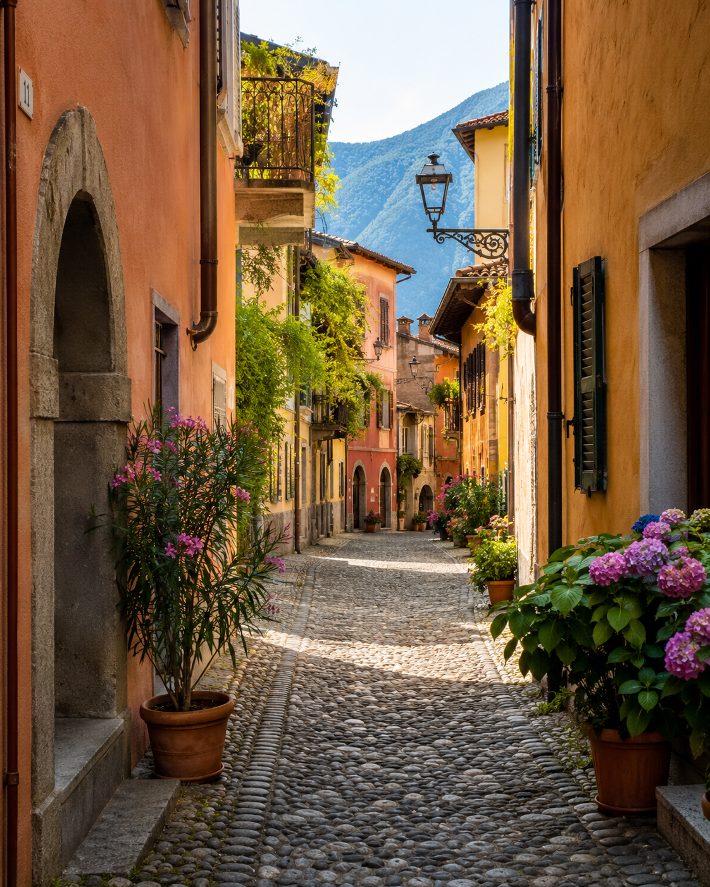
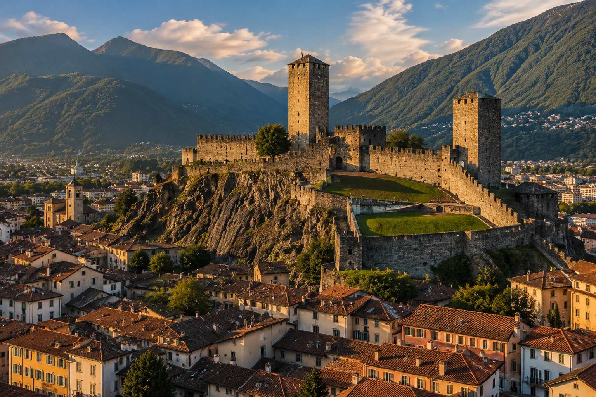
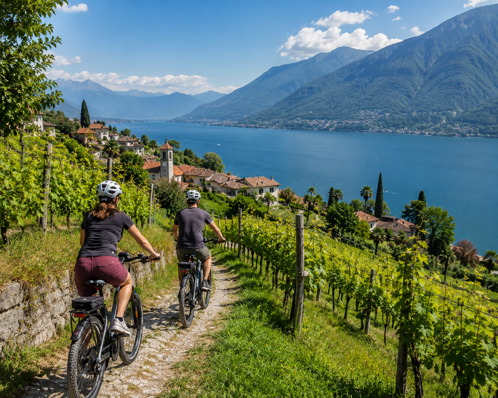
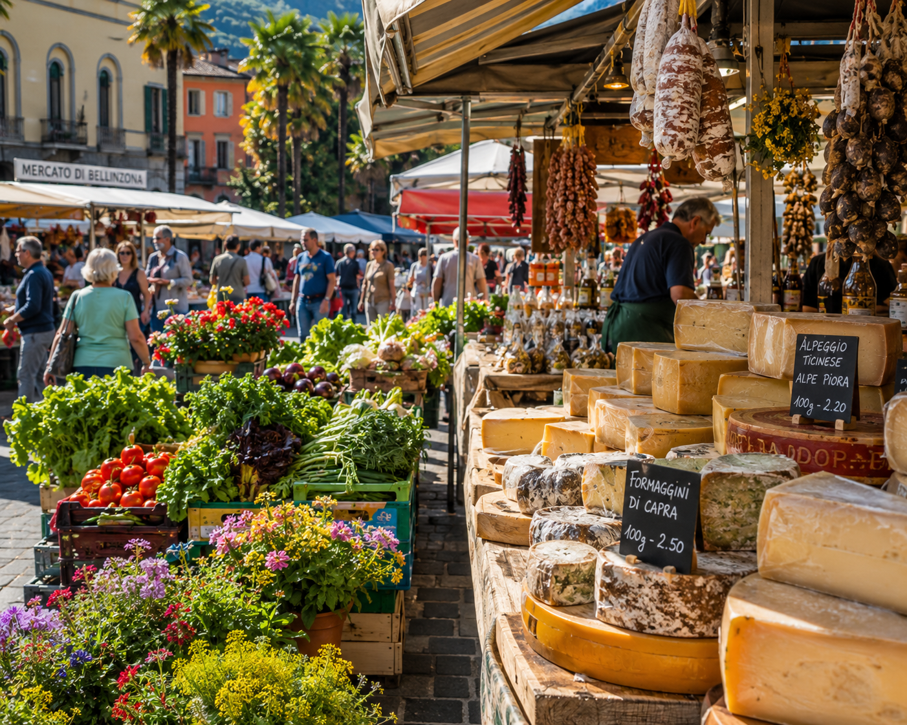
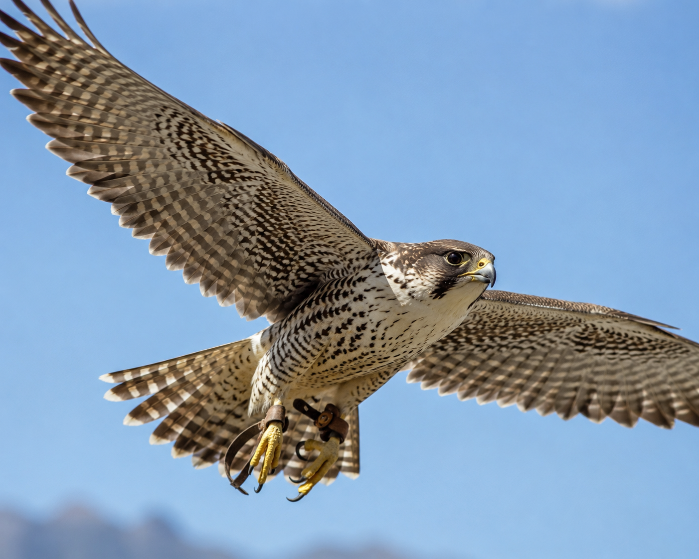
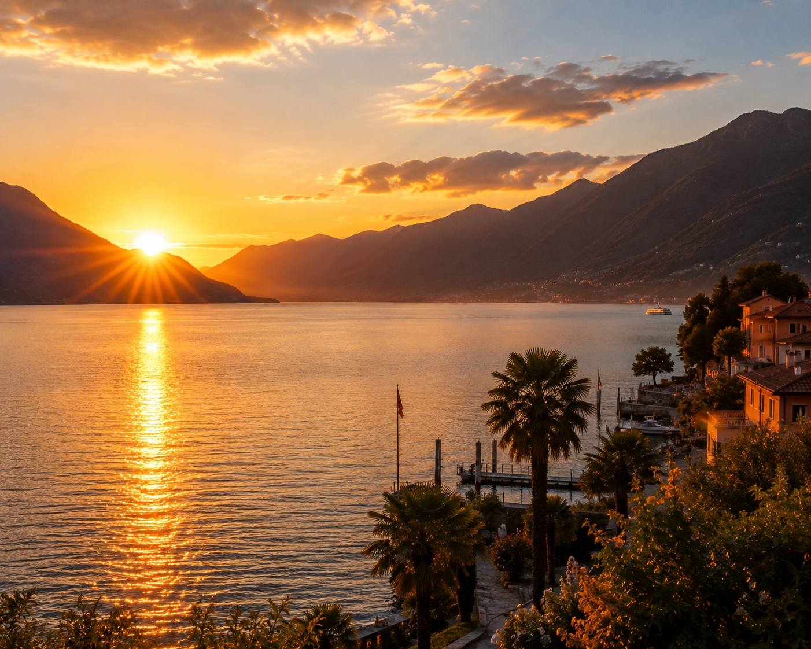

Vorstandsreise · 19.–21. Juni 2026
Unterwegs im TessinRaus aus Sitzungszimmern, E-Mails und Alltag.
Drei Tage gemeinsam unterwegs. Piazza, Lago Maggiore, Tessiner Gassen — und hoffentlich viele Momente, die bleiben.
Das Tessin entschleunigt. Nicht laut. Nicht spektakulär. Sondern auf seine ganz eigene Art.

Tessin · Juni 2026Manchmal reicht ein Espresso, ein Schattenplatz und gute Gespräche. Das Tessin versteht das.

Drei mittelalterliche Burgen, eine Piazza, ein Samstagmarkt der zu den schönsten Tessins zählt. Bellinzona ist kein Touristenmagnet — es ist eine Stadt, die einfach lebt. Abends wird es ruhiger, die Abendsonne färbt die Dächer golden, und plötzlich versteht man, warum man hergekommen ist.
Die sonnigste Stadt der Schweiz liegt dort, wo der Lago Maggiore die Berge trifft. Palmen, Piazza Grande, Filmfestival — Locarno lebt langsamer. Und das ist genau richtig so.
Zwischen Gotthard und Lago Maggiore entsteht ein Lebensgefühl, das man in der Schweiz kein zweites Mal findet.



Nicht laut. Nicht spektakulär. Sondern auf seine ganz eigene Art.Vorstandsreise 2026 · Wohnen. Leben. Mitgestalten.

«Vielleicht der schönste Moment:
Wenn Bellinzona langsam ruhiger wird
und die Abendsonne die Dächer golden färbt.»